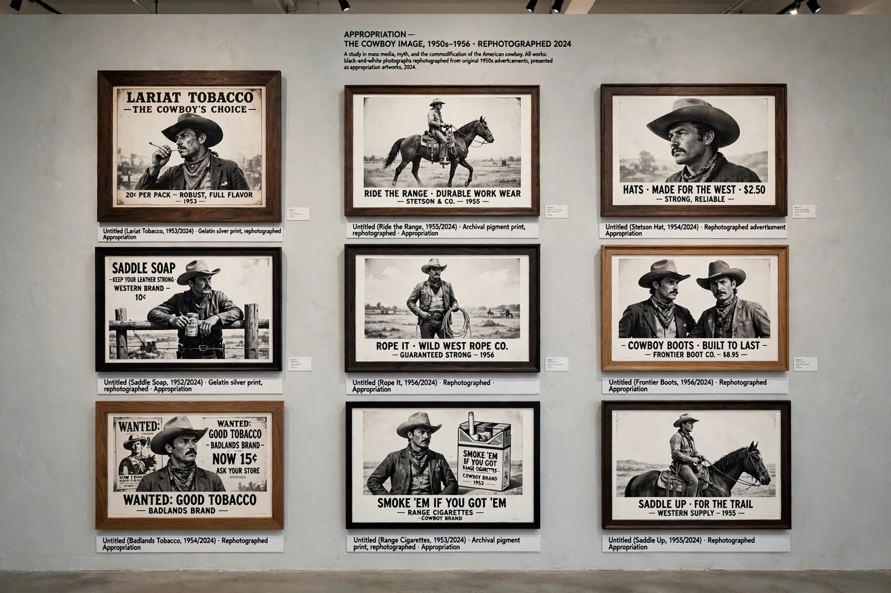

Appropriation (art)
In art, appropriation is the deliberate borrowing, copying and alteration of pre-existing images and objects. Appropriation art — most prominently associated with the American Pictures Generation of the late 1970s and 1980s — uses borrowed imagery to question originality, authorship and the authority of images in mass media. The practice has roots in the collages of Cubism, the readymades of Marcel Duchamp and the silkscreens of Andy Warhol.

| Appropriation art | |
|---|---|
| Period | c. 1977 – present (roots in 1910s) |
| Key artists | Sherrie Levine, Richard Prince, Cindy Sherman, Barbara Kruger, Jeff Koons |
| Techniques | Re-photography, collage, readymade, sampling |
| Associated exhibition | Pictures, Artists Space, New York (1977) |
The Pictures Generation
The 1977 exhibition Pictures, curated by Douglas Crimp at Artists Space in New York, named a generation of artists who took the mediated image itself as their subject. Sherrie Levine's After Walker Evans (1981) — re-photographs of Evans's Depression-era photographs — attacked the modernist myth of original creation. Richard Prince re-photographed Marlboro cigarette advertisements, cropping out the text to isolate the cowboy myth; his appropriations later became a test case for copyright law in Cariou v. Prince (2013), in which a US appeals court found much of his use transformative and fair.
Legal and critical debates
Appropriation has repeatedly collided with copyright: Jeff Koons lost Rogers v. Koons (1992) over a sculpture copied from a photograph, while later courts have been more receptive to fair-use arguments. Critics debate whether appropriation demystifies media power or merely converts other people's work into luxury commodities. In the digital era, sampling, memes and AI-generated imagery have made appropriation a general condition of image culture rather than a single movement.
See also
Recreated from memory as part of the muse-webcrawl project.